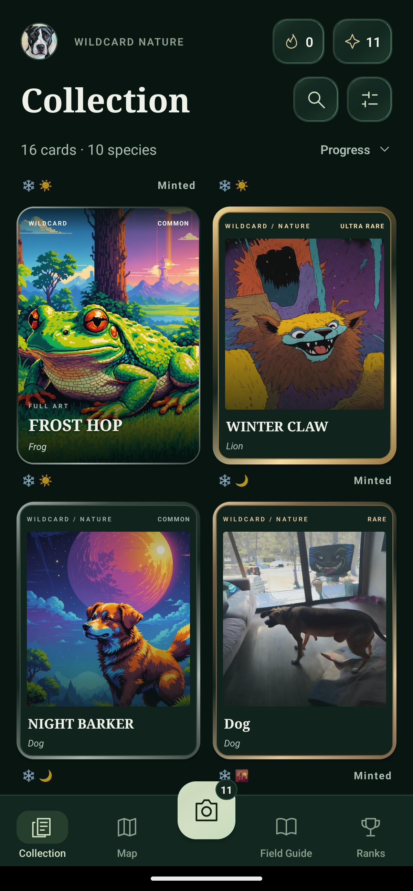
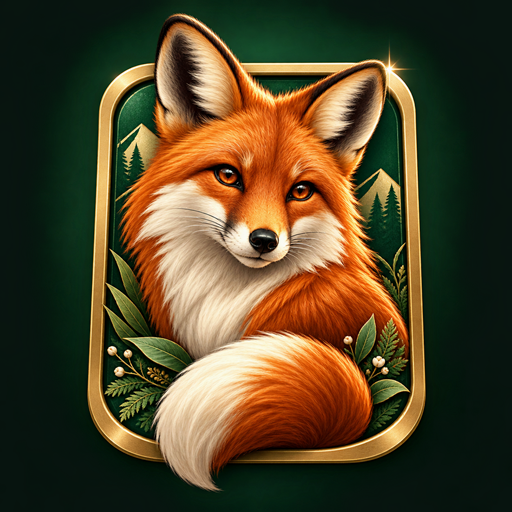
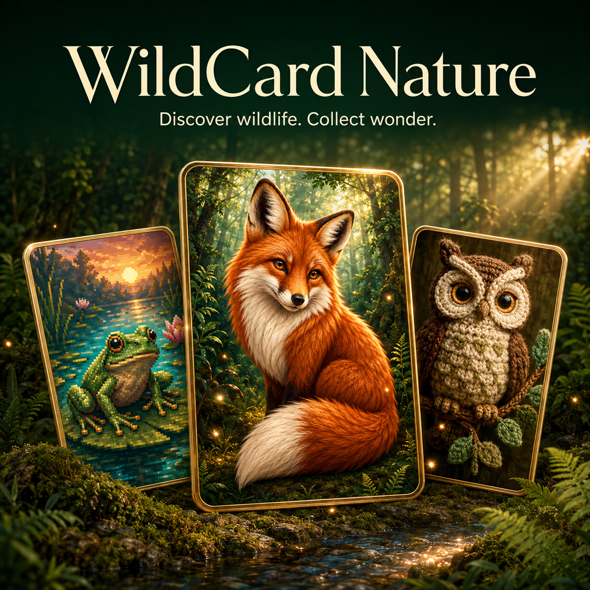
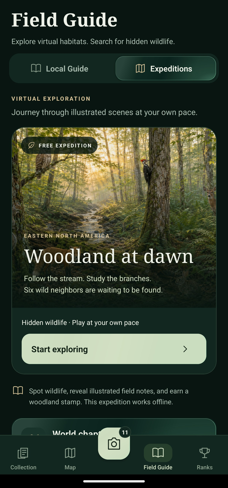
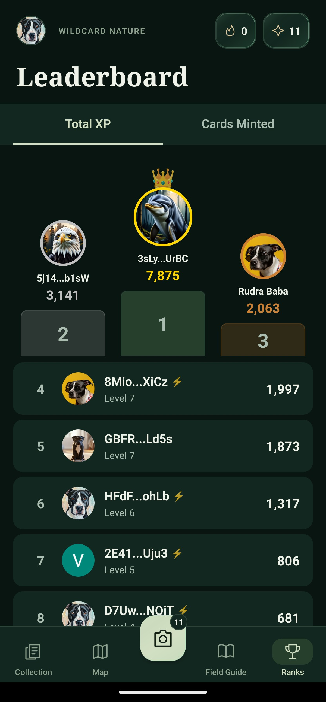

Your discoveries, collected.
Browse your cards and species. Rare and Ultra Rare cards can be minted on Solana.

WildCard NatureA LITTLE CURIOSITY. A WHOLE WILD WORLD.
Turn the wildlife you photograph into collectible art. Build a field guide filled with your own discoveries.
Discover WildCard Nature ↓Wildlife photography · Collectible cards · Exploration

FROM SOMETHING YOU SAW, TO SOMETHING YOU KEEP
Photograph an animal, identify the species, and choose an art style. Your discovery becomes a card with its own rarity and personality.
A classic trading-card look, with your wildlife discovery as the subject.
Promotional artwork. See real cards in the app screens below.
THE FIELD GUIDE · ATLAS EXPEDITIONS
Enter Woodland at dawn. Search the illustrated habitat for six hidden animals, reveal field notes, and earn a woodland stamp. This expedition works offline.
Look along the stream. A woodland neighbour is waiting to be found.
A CLOSER LOOK
Actual app screens. A collection that grows with every outing.

Browse your cards and species. Rare and Ultra Rare cards can be minted on Solana.

Explore local species and illustrated expeditions, with wildlife notes along the way.

Earn XP, build daily streaks, use streak shields, and follow the leaderboards.
FOR THE COLLECTOR IN YOU
Rare and Ultra Rare cards can be minted as NFTs on Solana. Connect a compatible wallet when you’re ready to mint.
Verified Seeker users can choose Genesis, an exclusive art style that brings digital nature to their collection.
Photograph wildlife and turn your discoveries into ReImagined, Crochet, or Pixel Art cards. Choose Traditional for a classic card look or Scenic to preserve the scene.
Yes. The Field Guide includes local species and illustrated Atlas expeditions. Woodland at dawn lets you find six hidden animals, read field notes, and earn a woodland stamp, even offline.
Only Rare and Ultra Rare cards are eligible for Solana minting. You can still collect cards of every rarity in the app.
WildCard Nature is available through the Solana dApp Store. Open the store on your device and search for WildCard Nature.
WILDCARD NATURE · ANDROID & SOLANA SEEKER
Discover exclusive Genesis art for verified Seeker users.